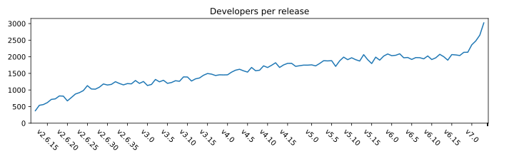
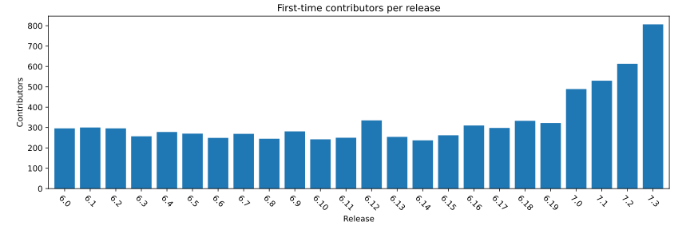
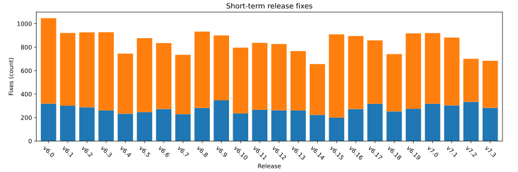
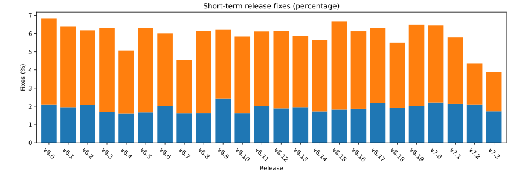

Development statistics for the 7.3 kernel
This development cycle was the first in the project's history to exceed 20,000 commits overall, 18,765 of those were non-merge commits. These commits added nearly 920,000 lines of code while removing just over 270,000, for a net growth of about 650,000 lines; that is a lot of new code to absorb. This code was contributed by 3,021 developers, smashing through the short-lived record of 2,652 set by the 7.2 cycle. To give a sense for what is happening with contributor counts, here is a plot of contributors per release over the entire git history:

The most active developers this time around were:
Most active 7.3 developers
By changesets Christian Brauner 216 1.2% Bui Duc Phuc 206 1.1% Pengpeng Hou 165 0.9% Sean Christopherson 161 0.9% Pan Chuang 150 0.8% Tejun Heo 142 0.8% Maxime Ripard 134 0.7% Krzysztof Kozlowski 131 0.7% SJ Park 123 0.7% Alex Hung 122 0.7% Namjae Jeon 120 0.6% Uwe Kleine-König 115 0.6% Alex Deucher 111 0.6% Takashi Iwai 104 0.6% Breno Leitao 99 0.5% Rosen Penev 96 0.5% Imre Deak 95 0.5% Kumar Kartikeya Dwivedi 91 0.5% Lorenzo Stoakes 89 0.5% Thomas Weißschuh 85 0.5%
By changed lines Aurabindo Pillai 126464 12.5% Alex Hung 40082 4.0% Jeff Chen 35827 3.5% Dongdong Hao 17046 1.7% Christian Brauner 14873 1.5% Lachlan Hodges 13949 1.4% Dimitri Sivanich 13580 1.3% Tejun Heo 12013 1.2% Mickaël Salaün 10081 1.0% Eric Biggers 9349 0.9% Ching-Te Ku 8576 0.8% Bhawanpreet Lakha 8299 0.8% Sean Christopherson 8108 0.8% Ce Sun 7492 0.7% Mikhail Kshevetskiy 7347 0.7% David Christensen 7051 0.7% Chun-Tse Shao 6411 0.6% Taniya Das 6399 0.6% Kumar Kartikeya Dwivedi 6377 0.6% Ian Rogers 6306 0.6%
The biggest contributor of non-merge changesets this time around was Christian Brauner [KSDB], who made significant improvements to the binfmt_misc subsystem and contributed fixes throughout the virtual filesystem layer. Bui Duc Phuc [KSDB], a contributor who was first seen in the 7.1 development cycle, was a close second with work that focused mostly on fixes within the sound-driver subsystem. Pengpeng Hou [KSDB], first seen in 7.0, made fixes throughout the driver subsystem. Sean Christopherson [KSDB] worked extensively with the KVM hypervisor. Pan Chuang [KSDB], who had three commits in the kernel (starting with 6.17) until now, contributed a pile of driver-subsystem cleanups.
In the lines-changed column, Aurabindo Pillai [KSDB] contributed five commits containing, inevitably, a large set of machine-generated amdgpu register definitions. Alex Hung [KSDB] added numerous AMD graphics tests. Jeff Chen [KSDB] contributed three commits, one of which was a driver for NXP IW61x WiFi interfaces. Dongdong Hao [KSDB] added the leapraid SCSI driver and associated documentation.
The 7.2 development statistics included a note that the percentage of commits containing Reviewed-by tags had been dropping for a few development cycles; that trend has reversed in 7.3, where 1,399 commits (7.5%) had Tested-by tags and 9,545 (50.9%) had Reviewed-by tags. The top testers and reviewers were:
Test and review credits in 7.3
Tested-by Dan Wheeler 261 16.5% Luca Ceresoli 85 5.4% Mykola Marzhan 29 1.8% Tommaso Merciai 24 1.5% Victor Nogueira 20 1.3% Michael Kelley 19 1.2% Mostafa Saleh 19 1.2% Deborah Brouwer 19 1.2% Wolfram Sang 18 1.1% Nathan Chancellor 18 1.1% Randy Dunlap 18 1.1% Charlie Jenkins 16 1.0% Heiko Stuebner 15 0.9% K Prateek Nayak 14 0.9% Samuel Salin 14 0.9%
Reviewed-by Konrad Dybcio 474 3.7% Dmitry Baryshkov 305 2.4% Christoph Hellwig 246 1.9% Andy Shevchenko 206 1.6% Frank Li 198 1.6% Krzysztof Kozlowski 193 1.5% Simon Horman 170 1.3% Ilpo Järvinen 164 1.3% Luca Ceresoli 139 1.1% Thomas Zimmermann 123 1.0% Andrea Righi 117 0.9% Bhawanpreet Lakha 111 0.9% Hannes Reinecke 106 0.8% Linus Walleij 105 0.8% Cezary Rojewski 100 0.8%
Dan Wheeler [KSDB] remains the most prolific tester, trying out about four changes to the AMD graphics drivers every day of this 63-day development cycle; nobody else comes close. Meanwhile, Konrad Dybcio [KSDB] somehow managed to review 474 Qualcomm driver and devicetree changes — over seven per day. Dmitry Baryshkov [KSDB] (nearly five per day) and Christoph Hellwig [KSDB] (just under four per day) were slackers by comparison.
It is also worth taking a quick look at the Reported-by tags in this release. These tags appeared in 1,411 commits, or 7.5% of the total, and the numbers look like this:
Top bug reporters for 7.3 Sashiko 304 19.4% Syzbot 239 15.3% kernel test robot 89 5.7% Vega 83 5.3% Nicholas Carlini 41 2.6% Konrad Dybcio 30 1.9% Xiang Mei 20 1.3% Dan Carpenter 17 1.1% Chris Mason 14 0.9% TencentOS Corvus AI 13 0.8% Yuhao Jiang 13 0.8% Weiming Shi 11 0.7% Martin Hodo 11 0.7% Mark Brown 9 0.6% autonomouscodesecurity@microsoft.com 9 0.6%
The Sashiko review tool [KSDB], which did not exist one year ago, is now responsible for nearly 20% of the Reported-by tags in this release. Overall, automated systems are the source of nearly half of the credited bug reports.
See this KSDB page for more information on the use of all of these tags in the 7.3 kernel.
Work on 7.3 was supported by 232 employers that we were able to identify; the most active of those were:
Most active 7.3 employers
By changesets (Unknown) 3851 20.5% AMD 1186 6.3% Intel 1179 6.3% 1138 6.1% Qualcomm 1115 5.9% Red Hat 837 4.5% (None) 679 3.6% Kylinsoft 624 3.3% Meta 524 2.8% IBM 472 2.5% NVIDIA 400 2.1% SUSE 363 1.9% (Consultant) 303 1.6% Oracle 271 1.4% (Academia) 268 1.4% Renesas Electronics 240 1.3% NXP Semiconductors 237 1.3% Arm 234 1.2% Amutable 216 1.2% Huawei Technologies 174 0.9%
By lines changed AMD 225173 22.3% (Unknown) 144387 14.3% Qualcomm 61771 6.1% 56977 5.6% NXP Semiconductors 45506 4.5% Intel 44774 4.4% Red Hat 38420 3.8% (None) 32075 3.2% Meta 27768 2.7% IBM 20441 2.0% NVIDIA 16737 1.7% Realtek 15731 1.6% Amutable 14873 1.5% Morse Micro 13949 1.4% HP Enterprise 13698 1.4% Renesas Electronics 11756 1.2% (Consultant) 11405 1.1% Cloudflare 10070 1.0% Collabora 8405 0.8% Samsung 8399 0.8%
The continuing flood of new developers is behind the inexorable growth in the "unknown" category; the bulk of them probably are working on their own time, but there is no easy way to know for sure. An interesting trend to note is the increase in contributions from Kylinsoft, which develops the Chinese Kylin OS distribution. There are 92 developers affiliated with this company who contributed to 7.3, most of whom contributed only a handful of commits. As a group, they appear to be working through lists of LLM-identified bugs.
First-time developers and young bugs
Quite a few of the above-mentioned Kylinsoft employees made their first kernel contributions in the 7.3 cycle. All told, there were 807 new developers seen this time around, continuing the trend we have been seeing over the course of 2026:

Well over a quarter of the developers contributing to 7.3 were people who had never been seen in the community before. The growth trend in new contributors clearly cannot continue forever; maintainers are already losing their ability to keep up with this flood. But it also shows no signs of slowing down.
These new contributors are making changes all over the kernel. Many of them are trivial — typo fixes and the like — but many others are significant changes to important kernel subsystems. It is clear that many of these contributors do not really understand the code they are using LLMs to modify, leading to concerns about the quality of their patches and the long-term maintainability of a kernel that is being flooded with those patches.
One claim that has been heard recently is that the advent of automated patch review has increased the quality of the incoming code, making it safer to accept more of it with less human intervention. Determining whether that is really true will take years, because it takes that long for many bugs to surface. One can try to get an early indication of which way the wind is blowing, though, by looking at the bugs that did show up early on:

Here, the lower (blue) bar is the number of commits that included a Fixes tag indicating that the bug had been introduced in the previous release. The blue bar for 7.3, on the right-hand side, is thus the number of 7.3 commits fixing bugs that were introduced in 7.2. That value appears to be relatively stable over the recent release history, with no obvious trend. That said, bear in mind that the overall patch volume has increased with recent kernels, so a steady rate of previous-release fixes suggests a lower bug rate overall.
The upper (orange) bar is the number of fixes to commits merged during the same release cycle; these are bugs that never find their way into a released kernel. That number does appear to be falling with the most recent releases, especially when considering the increased patch volume.
Rather than trying to imagine how the change in patch volume affects these numbers, one can simply plot them as a percentage of the total number of commits in the relevant release:

Here, the change seems clearer. The number of short-term-buggy commits as a percentage of the total has remained roughly constant over recent years. But that percentage began to fall in 7.1, and has fallen more sharply since. Specifically, bugs that turn up and must be fixed within the same release cycle seem to be declining. That suggests that automated patch review may, indeed, be filtering out the sorts of bugs that become immediately apparent once the affected code starts seeing wider testing. Of course, another explanation could be that, while bugs are being introduced at the usual rate, they are now being found and fixed at a lower rate. Given the accelerated rate of bug-finding in general, though, that explanation seems unlikely. The real story will take years to play out, but the preliminary indications are that the quality of code going into the kernel, with regard to obvious bugs at least, might just be improving.
As the development community heads into the 7.4 merge window, there are
nearly 16,000 non-merge changesets sitting in linux-next. That is
significantly more than the patches that were staged for 7.3, suggesting
that the records set by 7.3 will, once again, be short-lived. The nature
of the kernel-development community is changing, and what we will end up
with is far from clear. It is certain to be an interesting ride, though;
stay tuned and we will see where it goes together.
| Index entries for this article | |
|---|---|
| Kernel | Releases/7.3 |
Posted Oct 19, 2026 18:01 UTC (Mon)
by jpeisach (subscriber, #181966)
[Link]
I personally first appeared in 7.1 as things winded down in my senior year of high school, and 7.2 I was able to stay around with some light fixes. In the past month, I've barely been up to date with my public email, and for academic and mental health reasons I've been putting it to the side. My 7.3 contributions were just test/review (which I am hoping we will see more of. I get that testing and reviewing is a bit of a time commitment but I think it is still important!)
Posted Oct 20, 2026 0:51 UTC (Tue)
by rgushchin (subscriber, #115257)
[Link]
Posted Oct 20, 2026 13:41 UTC (Tue)
by alx.manpages (subscriber, #145117)
[Link] (1 responses)
So, indeed, it seems the same-release bugs are nicely going down.
We'll see in the long term how these numbers add up; I think the 2nd-version bugs might also be interesting to look at, since that will show more of the tail. But it looks better than I originally thought.
Posted Oct 21, 2026 12:31 UTC (Wed)
by taladar (subscriber, #68407)
[Link]
Posted Oct 21, 2026 13:49 UTC (Wed)
by geert (subscriber, #98403)
[Link] (1 responses)
Posted Oct 27, 2026 11:35 UTC (Tue)
by andy_shev (subscriber, #75870)
[Link]
Prediction for 7.4 in terms of new contributors
For tools (e.g. coccinelle) many don't use Reported-by: tag and use some free form instead.
If we account those, here are numbers:
adjusted Reported-by numbers
Tool / Reporter Reported-by +Sug/Assist +Closes/Link +Free-Form Adjusted
--------------------------------------------------------------------------------------------------
Sashiko 304 +9 +87 +137 539
Syzbot / Syzkaller 239 +0 +0 +26 254
kernel test robot (0-day / LKP) 89 +0 +3 +4 95
Vega (Nebusec AI) 83 +0 +3 +0 86
Sparse (warning fixes + Assisted-by) - +15 +0 +43 58
Coccinelle / coccicheck (findings only) 1 +3 +0 +51 55
Nicholas Carlini 41 +1 +0 +0 42
Konrad Dybcio 30 +4 +0 +0 34
Dan Carpenter / Smatch (+12 self-fixes) 17 +5 +0 +7 29
Xiang Mei 20 +0 +0 +0 19
Svace (Linux Verification Center) - +0 +0 +18 18
Mark Brown 9 +4 +0 +2 15
Chris Mason 14 +0 +0 +0 14
TencentOS Corvus AI 13 +0 +0 +0 13
Yuhao Jiang 13 +0 +0 +0 13
Weiming Shi 11 +0 +0 +0 11
Martin Hodo 11 +0 +0 +0 11
autonomouscodesecurity@microsoft.com 9 +0 +0 +0 9
Coverity - +0 +0 +2 2
Young bugs
And the percentage of bugs seems also nicely going down.
Young bugs
Number of changesets
Number of changesets